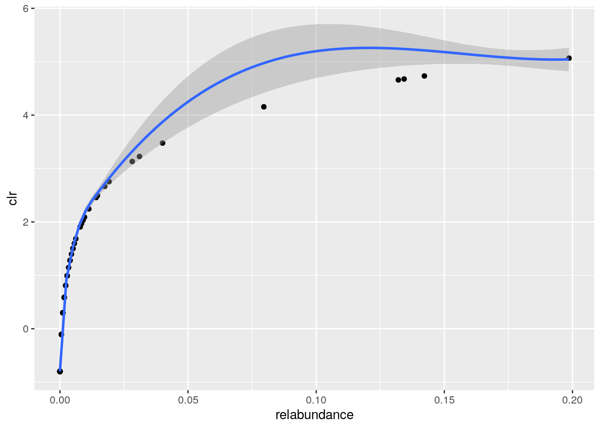

6 Microbiome data exploration
Now we have loaded the data set into R. Next, let us walk through some basic operations for data exploration to confirm that the data has all the necessary components.
Chapters 4-6 in OMA provide many more examples on exploring and manipulating microbiome data.
6.1 Data structure
Let us now investigate how taxonomic profiling data is organized in R.
Dimensionality tells us how many taxa and samples the data contains. As we can see, there are 151 taxa and 27 samples.
dim(tse)## [1] 151 27The rowData slot contains a taxonomic table. This includes taxonomic
information for each of the 151 entries. With the head()
command, we can print just the beginning of the table.
The rowData seems to contain information from 6
different taxonomy classes.
knitr::kable(head(rowData(tse))) %>%
kableExtra::kable_styling("striped",
latex_options="scale_down") %>%
kableExtra::scroll_box(width = "100%")| Kingdom | Phylum | Class | Order | Family | Genus | |
|---|---|---|---|---|---|---|
| 1726470 | Bacteria | Bacteroidetes | Bacteroidia | Bacteroidales | Bacteroidaceae | Bacteroides |
| 1726471 | Bacteria | Bacteroidetes | Bacteroidia | Bacteroidales | Bacteroidaceae | Bacteroides |
| 17264731 | Bacteria | Bacteroidetes | Bacteroidia | Bacteroidales | Porphyromonadaceae | Parabacteroides |
| 17264726 | Bacteria | Bacteroidetes | Bacteroidia | Bacteroidales | Bacteroidaceae | Bacteroides |
| 1726472 | Bacteria | Verrucomicrobia | Verrucomicrobiae | Verrucomicrobiales | Verrucomicrobiaceae | Akkermansia |
| 17264724 | Bacteria | Bacteroidetes | Bacteroidia | Bacteroidales | Bacteroidaceae | Bacteroides |
The colData slot contains sample metadata. It contains information for all 27 samples.
However, here only the 6 first samples are shown as we use the head() command. There
are 4 columns, that contain information, e.g., about patients’ status, and cohort.
knitr::kable(head(colData(tse))) %>%
kableExtra::kable_styling("striped",
latex_options="scale_down") %>%
kableExtra::scroll_box(width = "100%")| patient_status | cohort | patient_status_vs_cohort | sample_name | |
|---|---|---|---|---|
| A110 | ADHD | Cohort_1 | ADHD_Cohort_1 | A110 |
| A12 | ADHD | Cohort_1 | ADHD_Cohort_1 | A12 |
| A15 | ADHD | Cohort_1 | ADHD_Cohort_1 | A15 |
| A19 | ADHD | Cohort_1 | ADHD_Cohort_1 | A19 |
| A21 | ADHD | Cohort_2 | ADHD_Cohort_2 | A21 |
| A23 | ADHD | Cohort_2 | ADHD_Cohort_2 | A23 |
From here, we can draw summaries of the sample (column) data, for instance to see what is the patient status distribution.
The command colData(tse)$patient_status fetches the data from the
column, and table() creates a table that shows how many times each
class is present, and sort() sorts the table to ascending order.
There are 13 samples from patients having ADHD, and 14 control samples.
sort(table(colData(tse)$patient_status))##
## ADHD Control
## 13 146.1.1 Transformations
Microbial abundances are typically ‘compositional’ (relative) in the current microbiome profiling data sets. This is due to technical aspects of the data generation process (see e.g. Gloor et al., 2017).
The next example calculates relative abundances as these are usually easier to interpret than plain counts. For some statistical models we need to transform the data into other formats as explained in above link (and as we will see later).
# Calculates relative abundances, and stores the table to assays
tse <- transformCounts(tse, method = "relabundance")A variety of standard transformations for microbiome data are available for TSE data objects through mia R package.
6.1.2 Aggregation
Microbial species can be called at multiple taxonomic resolutions. We can easily agglomerate the data based on taxonomic ranks. Here, we agglomerate the data at Phylum level.
tse_phylum <- agglomerateByRank(tse, rank = "Phylum")
# Show dimensionality
dim(tse_phylum)## [1] 5 27Now there are 5 taxa and 27
samples, meaning that there are 5 different
Phylum level taxonomic groups. Looking at the rowData after
agglomeration shows all Firmicutes are combined together, and all
lower rank information is lost.
From the assay we can see that all abundances of taxa that belong to Firmicutes are summed up.
knitr::kable(head(rowData(tse_phylum))) %>%
kableExtra::kable_styling("striped",
latex_options="scale_down") %>%
kableExtra::scroll_box(width = "100%")| Kingdom | Phylum | Class | Order | Family | Genus | |
|---|---|---|---|---|---|---|
| Bacteroidetes | Bacteria | Bacteroidetes | NA | NA | NA | NA |
| Verrucomicrobia | Bacteria | Verrucomicrobia | NA | NA | NA | NA |
| Proteobacteria | Bacteria | Proteobacteria | NA | NA | NA | NA |
| Firmicutes | Bacteria | Firmicutes | NA | NA | NA | NA |
| Cyanobacteria | Bacteria | Cyanobacteria | NA | NA | NA | NA |
If you are sharp, you have by now noticed that all the aggregated
values in the above example are NA’s (missing data). This is because
the agglomeration is missing abundances for certain taxa, and in that
case the sum is not defined by default (na.rm = FALSE). We can
ignore the missing values in summing up the data by setting na.rm = TRUE; then the taxa that do not have information in specified level
will be removed. Those taxa that do not have information in specified
level are agglomerated at lowest possible level that is left after
agglomeration.
temp <- rowData(agglomerateByRank(tse, rank = "Genus"))
# Prints those taxa that do not have information at the Genus level
knitr::kable(head(temp[temp$Genus == "",])) %>%
kableExtra::kable_styling("striped",
latex_options="scale_down") %>%
kableExtra::scroll_box(width = "100%")| Kingdom | Phylum | Class | Order | Family | Genus | |
|---|---|---|---|---|---|---|
| Family:Lachnospiraceae | Bacteria | Firmicutes | Clostridia | Clostridiales | Lachnospiraceae | |
| Order:Bacteroidales | Bacteria | Bacteroidetes | Bacteroidia | Bacteroidales | ||
| Order:Clostridiales | Bacteria | Firmicutes | Clostridia | Clostridiales | ||
| Family:Enterobacteriaceae | Bacteria | Proteobacteria | Gammaproteobacteria | Enterobacteriales | Enterobacteriaceae | |
| Order:Gastranaerophilales | Bacteria | Cyanobacteria | Melainabacteria | Gastranaerophilales |
Here agglomeration is done similarly, but na.rm = TRUE
temp2 <- rowData(agglomerateByRank(tse, rank = "Genus", na.rm = TRUE))
print(paste0("Agglomeration with na.rm = FALSE: ", dim(temp)[1], " taxa."))## [1] "Agglomeration with na.rm = FALSE: 54 taxa."print(paste0("Agglomeration with na.rm = TRUE: ", dim(temp2)[1], " taxa."))## [1] "Agglomeration with na.rm = TRUE: 49 taxa."The mia package contains further examples on various data agglomeration and splitting options.
6.2 Visualization
The miaViz package facilitates data visualization. Let us plot the Phylum level abundances.
# Here we specify "relabundance" to be abundance table that we use for plotting.
# Note that we can use agglomerated or non-agglomerated tse as an input, because
# the function agglomeration is built-in option.
# Legend does not fit into picture, so its height is reduced.
plot_abundance <- plotAbundance(tse, abund_values="relabundance", rank = "Phylum") +
theme(legend.key.height = unit(0.5, "cm")) +
scale_y_continuous(label = scales::percent)## Scale for 'y' is already present. Adding another scale for 'y', which will
## replace the existing scale.plot_abundance 
Density plot shows the overall abundance distribution for a given taxonomic group. Let us check the relative abundance of Firmicutes across the sample collection. The density plot is a smoothened version of a standard histogram.
The plot shows peak abundances around 30 %.
# Subset data by taking only Firmicutes
tse_firmicutes <- tse_phylum["Firmicutes"]
# Gets the abundance table
abundance_firmicutes <- assay(tse_firmicutes, "relabundance")
# Creates a data frame object, where first column includes abundances
firmicutes_abund_df <- as.data.frame(t(abundance_firmicutes))
# Rename the first and only column
colnames(firmicutes_abund_df) <- "abund"
# Creates a plot. Parameters inside feom_density are optional. With
# geom_density(bw=1000), it is possible to adjust bandwidth.
firmicutes_abund_plot <- ggplot(firmicutes_abund_df, aes(x = abund)) +
geom_density(color="darkred", fill="lightblue") +
labs(x = "Relative abundance", title = "Firmicutes") +
theme_classic() + # Changes the background
scale_x_continuous(label = scales::percent)
firmicutes_abund_plot
For more visualization options and examples, see the miaViz vignette.
6.3 Exercises (optional)
Explore some of the following questions on your own by following online examples. Prepare a reproducible report (Rmarkdown), and include the code that you use to import the data and generate the analyses.
Abundance table Retrieve the taxonomic abundance table from the example data set (TSE object). Tip: check “assays” in data import section
How many different samples and genus-level groups this phyloseq object has? Tips: see dim(), rowData()
What is the maximum abundance of Akkermansia in this data set? Tip: aggregate the data to Genus level with agglomerateByRank, pick abundance assay, and check a given genus (row) in the assay
Draw a histogram of library sizes (total number of reads per sample). Tip: Library size section in OMA. You can use the available function, or count the sum of reads per sample by using the colSums command applied on the abundance table. Check Vandeputte et al. 2017 for further discussion on the differences between absolute and relative quantification of microbial abundances.
Taxonomy table Retrieve the taxonomy table and print out the first few lines of it with the R command head(). Investigate how many different phylum-level groups this phyloseq object has? Tips: rowData, taxonomicRanks in OMA.
Sample metadata Retrieve sample metadata. How many patient groups this data set has? Draw a histogram of sample diversities. Tips: colData
Subsetting Pick a subset of the data object including only ADHD individuals from Cohort 1. How many there are? Tips: subsetting in OMA
Transformations The data contains read counts. We can convert these into relative abundances and other formats. Compare abundance of a given taxonomic group using the example data before and after the compositionality transformation (with a cross-plot, for instance). You can also compare the results to CLR-transformed data (see e.g. Gloor et al. 2017)
Visual exploration Visualize the population distribution of abundances for certain taxonomic groups. Do the same for CLR-transformed abundances. Tip: assays, transformCounts
Experiment with other data manipulation tools from OMA.
6.4 Exploring data: example solutions
- Abundance table Retrieve the taxonomic abundance table from the example data set (TSE object).
# We show only part of it
assays(tse)$counts[1:6,1:6]## A110 A12 A15 A19 A21 A23
## 1726470 17722 11630 0 8806 1740 1791
## 1726471 12052 0 2679 2776 540 229
## 17264731 0 970 0 549 145 0
## 17264726 0 1911 0 5497 659 0
## 1726472 1143 1891 1212 584 84 700
## 17264724 0 6498 0 4455 610 0- How many different samples and genus-level groups this phyloseq object has?
dim(rowData(tse))## [1] 151 6- What is the maximum abundance of Akkermansia in this data set?
# Agglomerating to Genus level
tse_genus <- agglomerateByRank(tse,rank="Genus")
# Retrieving the count for Akkermansia
Akkermansia_abund <- assays(tse_genus)$count["Genus:Akkermansia",]
max(Akkermansia_abund)## [1] 2535- Draw a histogram of library sizes (total number of reads per sample).
library(scater)## Loading required package: scuttletse <- addPerCellQC(tse) # adding a new column "sum" to colData, of total counts/sample.
hist(colData(tse)$sum, xlab = "Total number of reads per sample", main = "Histogram of library sizes")* Taxonomy table Retrieve the taxonomy table and print out the first few lines of it with the R command head(). Investigate how many different phylum-level groups this phyloseq object has?
head(rowData(tse))## DataFrame with 6 rows and 6 columns
## Kingdom Phylum Class Order
## <character> <character> <character> <character>
## 1726470 Bacteria Bacteroidetes Bacteroidia Bacteroidales
## 1726471 Bacteria Bacteroidetes Bacteroidia Bacteroidales
## 17264731 Bacteria Bacteroidetes Bacteroidia Bacteroidales
## 17264726 Bacteria Bacteroidetes Bacteroidia Bacteroidales
## 1726472 Bacteria Verrucomicrobia Verrucomicrobiae Verrucomicrobiales
## 17264724 Bacteria Bacteroidetes Bacteroidia Bacteroidales
## Family Genus
## <character> <character>
## 1726470 Bacteroidaceae Bacteroides
## 1726471 Bacteroidaceae Bacteroides
## 17264731 Porphyromonadaceae Parabacteroides
## 17264726 Bacteroidaceae Bacteroides
## 1726472 Verrucomicrobiaceae Akkermansia
## 17264724 Bacteroidaceae BacteroidestaxonomyRanks(tse) # The taxonomic ranks available## [1] "Kingdom" "Phylum" "Class" "Order" "Family" "Genus"unique(rowData(tse)["Phylum"]) # phylum-level groups## DataFrame with 5 rows and 1 column
## Phylum
## <character>
## 1726470 Bacteroidetes
## 1726472 Verrucomicrobia
## 17264729 Proteobacteria
## 172647189 Firmicutes
## 17264742 Cyanobacterialength(unique(rowData(tse)["Phylum"])[,1]) # number of phylum-level groups## [1] 5- Sample metadata Retrieve sample metadata. How many patient groups this data set has? Draw a histogram of sample diversities.
colData(tse) # samples metadata## DataFrame with 27 rows and 7 columns
## patient_status cohort patient_status_vs_cohort sample_name sum
## <character> <character> <character> <character> <numeric>
## A110 ADHD Cohort_1 ADHD_Cohort_1 A110 37394
## A12 ADHD Cohort_1 ADHD_Cohort_1 A12 40584
## A15 ADHD Cohort_1 ADHD_Cohort_1 A15 16077
## A19 ADHD Cohort_1 ADHD_Cohort_1 A19 39210
## A21 ADHD Cohort_2 ADHD_Cohort_2 A21 6351
## ... ... ... ... ... ...
## A26 Control Cohort_2 Control_Cohort_2 A26 20431
## A27 Control Cohort_2 Control_Cohort_2 A27 14636
## A33 Control Cohort_3 Control_Cohort_3 A33 13051
## A35 Control Cohort_3 Control_Cohort_3 A35 12642
## A38 Control Cohort_3 Control_Cohort_3 A38 15544
## detected total
## <numeric> <numeric>
## A110 68 37394
## A12 51 40584
## A15 68 16077
## A19 62 39210
## A21 58 6351
## ... ... ...
## A26 64 20431
## A27 86 14636
## A33 78 13051
## A35 62 12642
## A38 74 15544unique(colData(tse)$patient_status) # patient groups## [1] "ADHD" "Control"# Example of sample diversity using Shannon index
tse <- mia::estimateDiversity(tse,
abund_values = "counts",
index = "shannon",
name = "shannon")
hist(colData(tse)$shannon, xlab = "Shannon index", main = "Histogram of sample diversity")- Subsetting Pick a subset of the data object including only ADHD individuals from Cohort 1. How many there are?
sub_cohort_1 <- tse[, colData(tse)$cohort=="Cohort_1"]
sub_cohort_1_ADHD <- sub_cohort_1[, colData(sub_cohort_1)$patient_status=="ADHD"]
colData(sub_cohort_1_ADHD)## DataFrame with 4 rows and 8 columns
## patient_status cohort patient_status_vs_cohort sample_name sum
## <character> <character> <character> <character> <numeric>
## A110 ADHD Cohort_1 ADHD_Cohort_1 A110 37394
## A12 ADHD Cohort_1 ADHD_Cohort_1 A12 40584
## A15 ADHD Cohort_1 ADHD_Cohort_1 A15 16077
## A19 ADHD Cohort_1 ADHD_Cohort_1 A19 39210
## detected total shannon
## <numeric> <numeric> <numeric>
## A110 68 37394 1.76541
## A12 51 40584 2.71644
## A15 68 16077 3.17810
## A19 62 39210 2.89199- Transformations The data contains read counts. We can convert these into relative abundances and other formats. Compare abundance of a given taxonomic group using the example data before and after the compositionality transformation (with a cross-plot, for instance). You can also compare the results to CLR-transformed data (see e.g. Gloor et al. 2017)
tse <- transformCounts(tse, method = "relabundance")
tse <- transformCounts(tse, method = "clr", abund_values = "counts",pseudocount = 1)## Warning: All the total abundances of samples do not sum-up to a fixed constant.
## Please consider to apply, e.g., relative transformation in prior to CLR
## transformation.# Lets compare with taxa: A29
taxa <- "A29"
df <- as.data.frame(list(
counts=assays(tse)$counts[,taxa],
relabundance=assays(tse)$relabundance[,taxa],
clr=assays(tse)$clr[,taxa])
)
ggplot(df, aes(x=counts,y=relabundance))+
geom_point()+
geom_smooth()## `geom_smooth()` using method = 'loess' and formula 'y ~ x'ggplot(df, aes(x=counts,y=clr))+
geom_point()+
geom_smooth()## `geom_smooth()` using method = 'loess' and formula 'y ~ x'ggplot(df, aes(x=relabundance,y=clr))+
geom_point()+
geom_smooth()## `geom_smooth()` using method = 'loess' and formula 'y ~ x' * Visual exploration Visualize the population distribution of abundances for certain taxonomic groups. Do the same for CLR-transformed abundances.
# Same taxa used as earlier
ggplot(df, aes(x=counts,colour="blue")) +
geom_density(alpha=.2)+
theme(legend.position = "none")+
labs(title =paste("Distribution of counts for",taxa, collapse = ": "))ggplot(df, aes(x=clr,colour="red")) +
geom_density(alpha=.2)+
theme(legend.position = "none")+
labs(title =paste("Distribution of clr for",taxa, collapse = ": "))